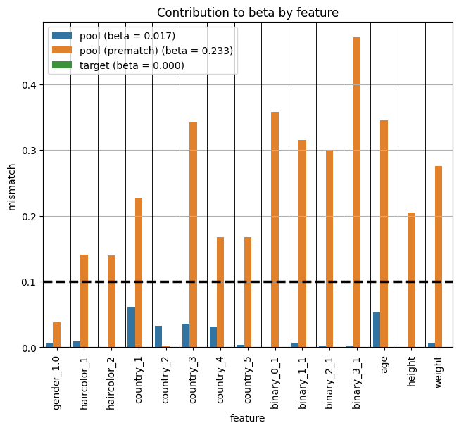
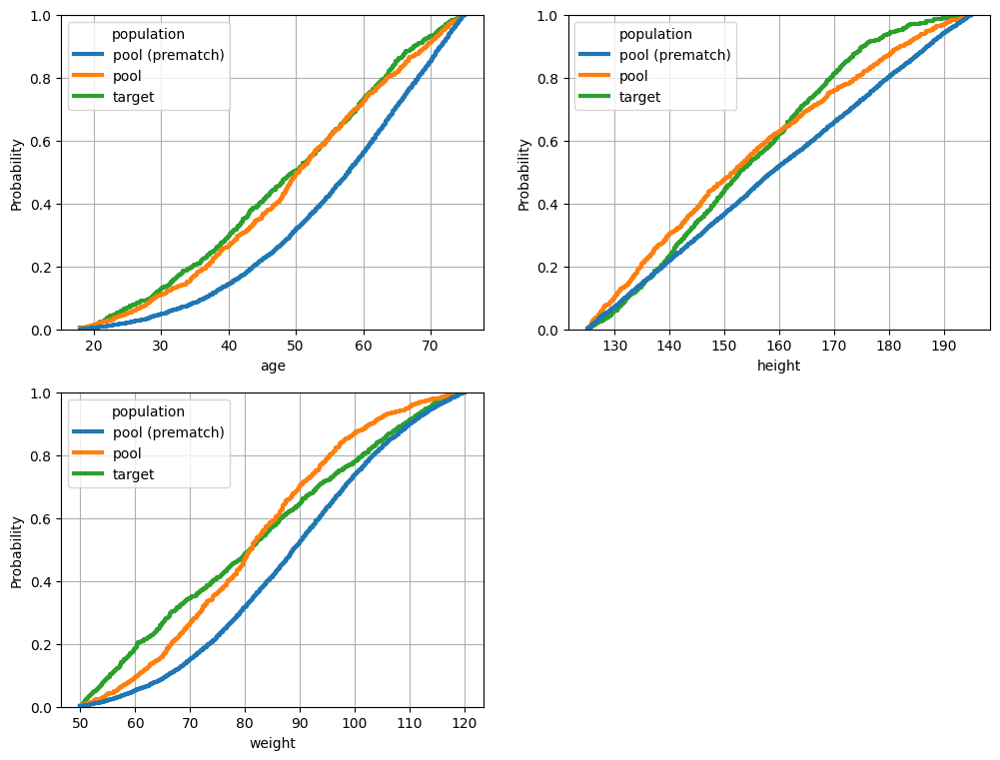
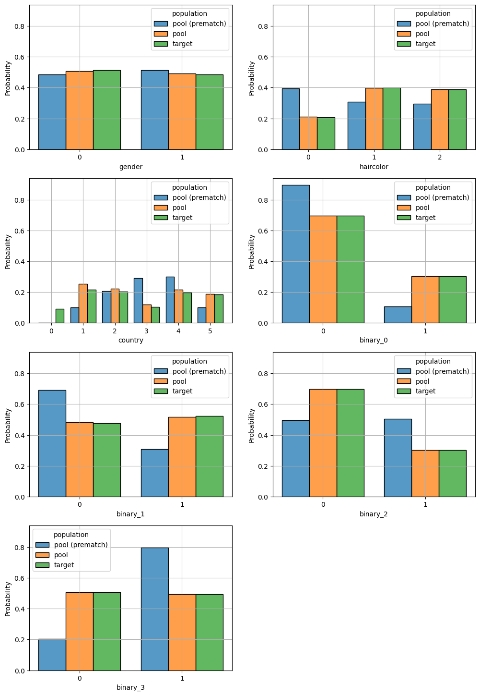
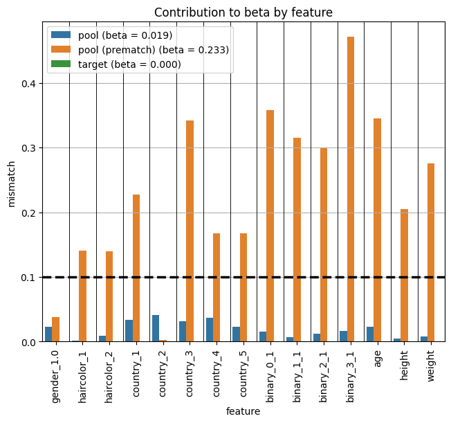
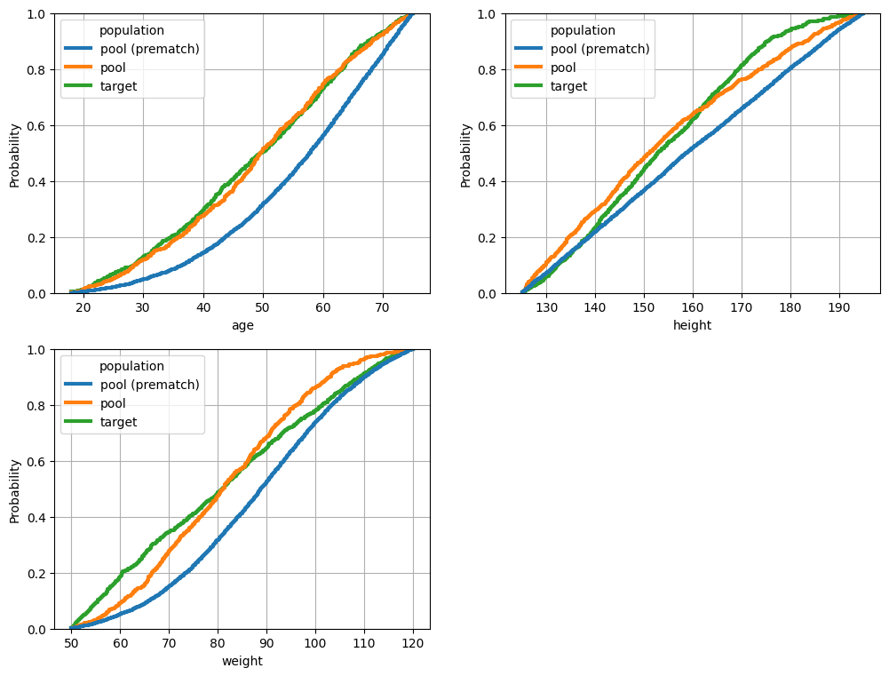
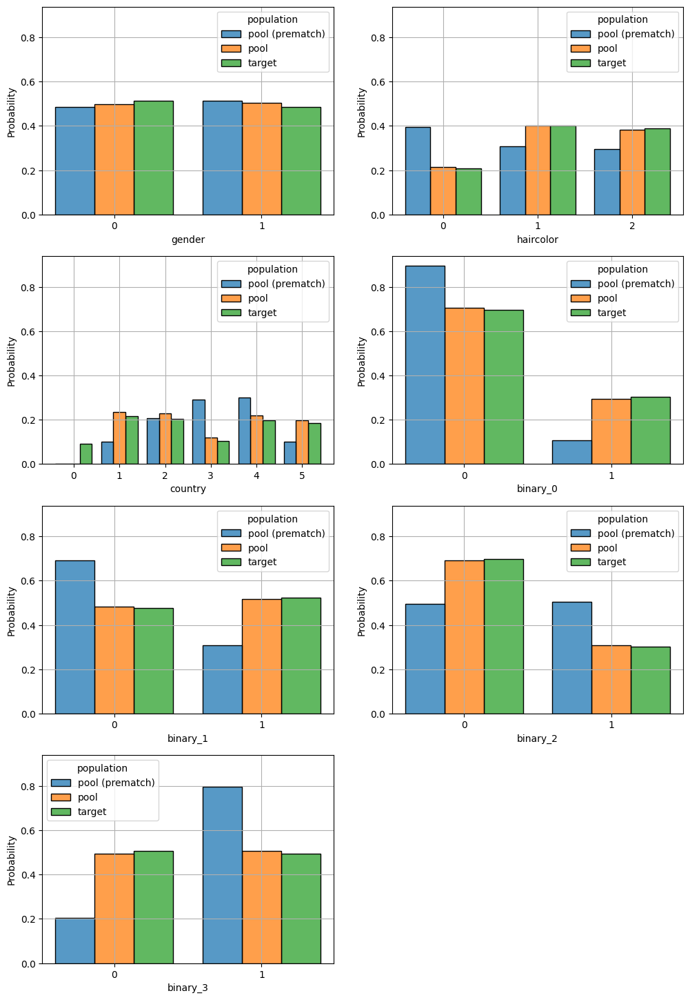
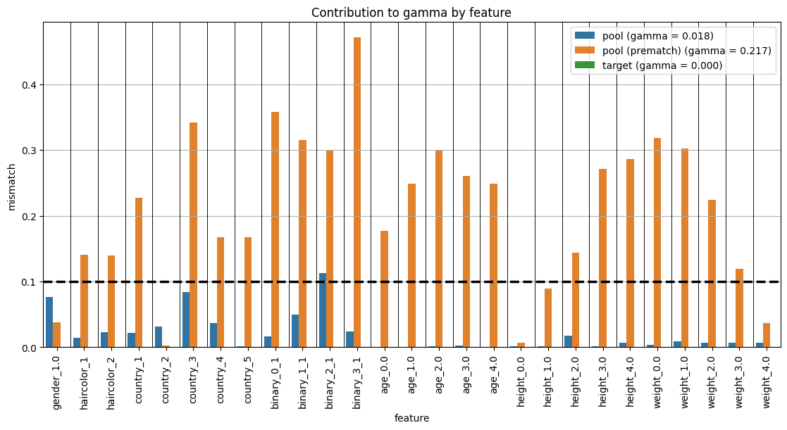
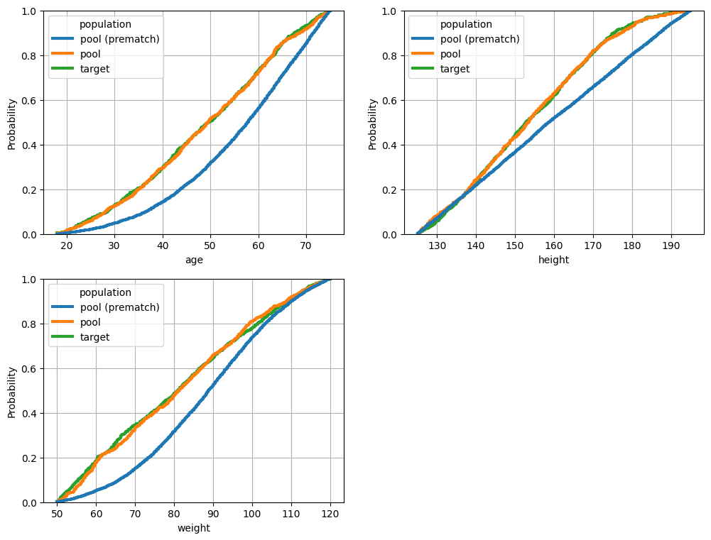
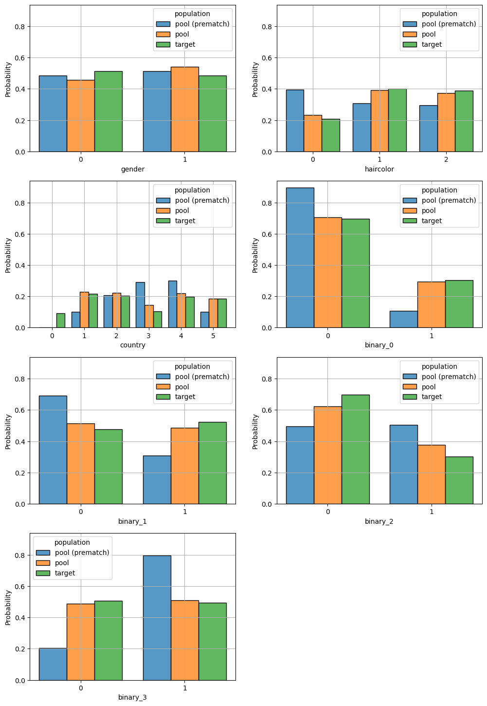

Genetic Matcher
The GeneticMatcher can be used to optimize any function of the baseline covariates, both linear and non-linear. In this demo notebook, we show how to call the matcher in the PyBalance library, including an example of a non-linear balance function.
[1]:
import logging
logging.basicConfig(
format="%(levelname)-4s [%(filename)s:%(lineno)d] %(message)s",
level='INFO',
)
from pybalance.sim import generate_toy_dataset
from pybalance.utils import (
BetaBalance,
BetaSquaredBalance,
BetaXBalance,
BetaMaxBalance,
GammaBalance,
GammaSquaredBalance,
GammaXBalance,
GammaXTreeBalance,
MatchingData
)
from pybalance.genetic import GeneticMatcher, get_global_defaults
from pybalance.visualization import (
plot_numeric_features,
plot_categoric_features,
plot_binary_features,
plot_per_feature_loss,
)
time_limit = 120
[2]:
m = generate_toy_dataset()
m
[2]:
Headers Numeric:
['age', 'height', 'weight']
Headers Categoric:
['gender', 'haircolor', 'country', 'binary_0', 'binary_1', 'binary_2', 'binary_3']
Populations
['pool', 'target']
['age', 'height', 'weight']
Headers Categoric:
['gender', 'haircolor', 'country', 'binary_0', 'binary_1', 'binary_2', 'binary_3']
Populations
['pool', 'target']
| age | height | weight | gender | haircolor | country | population | binary_0 | binary_1 | binary_2 | binary_3 | patient_id | |
|---|---|---|---|---|---|---|---|---|---|---|---|---|
| 0 | 62.511573 | 190.229250 | 105.165097 | 0.0 | 2 | 3 | pool | 0 | 0 | 0 | 0 | 0 |
| 1 | 68.505065 | 161.121236 | 95.001474 | 0.0 | 1 | 1 | pool | 1 | 0 | 1 | 0 | 1 |
| 2 | 50.071384 | 162.325356 | 84.290576 | 1.0 | 0 | 5 | pool | 0 | 0 | 1 | 1 | 2 |
| 3 | 44.423692 | 150.948096 | 82.031381 | 1.0 | 2 | 2 | pool | 0 | 0 | 0 | 1 | 3 |
| 4 | 41.695052 | 132.952651 | 54.857540 | 0.0 | 1 | 3 | pool | 0 | 0 | 1 | 1 | 4 |
| ... | ... | ... | ... | ... | ... | ... | ... | ... | ... | ... | ... | ... |
| 995 | 21.474205 | 168.602546 | 70.342128 | 0.0 | 2 | 5 | target | 0 | 0 | 0 | 1 | 10995 |
| 996 | 40.643320 | 188.188724 | 61.611744 | 0.0 | 2 | 4 | target | 1 | 0 | 0 | 1 | 10996 |
| 997 | 29.472765 | 161.408162 | 57.214095 | 0.0 | 0 | 1 | target | 0 | 1 | 1 | 1 | 10997 |
| 998 | 41.291949 | 150.968833 | 91.270798 | 0.0 | 0 | 3 | target | 0 | 0 | 0 | 0 | 10998 |
| 999 | 67.530294 | 155.124741 | 56.196505 | 1.0 | 0 | 1 | target | 1 | 0 | 0 | 0 | 10999 |
11000 rows × 12 columns
Optimize Beta (Mean Absolute SMD)
[3]:
objective = beta = BetaBalance(m)
matcher = matcher_beta = GeneticMatcher(
matching_data = m,
objective = objective,
log_every = 5,
n_generations = 5000,
time_limit = time_limit
)
matcher.get_params()
INFO [matcher.py:197] cpu
[3]:
{'objective': 'beta',
'candidate_population_size': 1000,
'n_candidate_populations': 5000,
'n_keep_best': 1250,
'n_voting_populations': 1250,
'n_mutation': 1250,
'n_generations': 5000,
'n_iter_no_change': 100,
'time_limit': 120,
'max_batch_size_gb': 2.0,
'seed': 1234,
'verbose': True,
'log_every': 5}
[4]:
matcher_beta.match()
INFO [initialization.py:34] Optimizing balance with genetic algorithm ...
INFO [initialization.py:35] Initial balance scores:
INFO [initialization.py:40] beta: 0.233
INFO [initialization.py:41] Initializing candidate populations ...
INFO [initialization.py:89] Computing PROPENSITY 1-1 matching method ...
INFO [matcher.py:185] Training model LogisticRegression (iter 1/50, 0.0 s) ...
INFO [matcher.py:145] Best propensity score match found:
INFO [matcher.py:146] Model: LogisticRegression
INFO [matcher.py:148] * C: 13.179630432958701
INFO [matcher.py:148] * fit_intercept: False
INFO [matcher.py:148] * max_iter: 500
INFO [matcher.py:148] * penalty: l2
INFO [matcher.py:148] * solver: saga
INFO [matcher.py:149] Score (beta): 0.0336
INFO [matcher.py:150] Solution time: 0.4 s
INFO [matcher.py:185] Training model SGDClassifier (iter 2/50, 0.4 s) ...
INFO [matcher.py:185] Training model SGDClassifier (iter 3/50, 0.5 s) ...
INFO [matcher.py:185] Training model SGDClassifier (iter 4/50, 0.5 s) ...
INFO [matcher.py:185] Training model SGDClassifier (iter 5/50, 0.7 s) ...
INFO [matcher.py:185] Training model LogisticRegression (iter 6/50, 0.7 s) ...
sklearn/linear_model/_sag.py:348: ConvergenceWarning: The max_iter was reached which means the coef_ did not converge
warnings.warn(
INFO [matcher.py:185] Training model SGDClassifier (iter 7/50, 1.5 s) ...
INFO [matcher.py:185] Training model LogisticRegression (iter 8/50, 1.6 s) ...
sklearn/linear_model/_sag.py:348: ConvergenceWarning: The max_iter was reached which means the coef_ did not converge
warnings.warn(
INFO [matcher.py:185] Training model SGDClassifier (iter 9/50, 2.3 s) ...
INFO [matcher.py:185] Training model SGDClassifier (iter 10/50, 2.3 s) ...
INFO [matcher.py:185] Training model SGDClassifier (iter 11/50, 2.4 s) ...
INFO [matcher.py:185] Training model LogisticRegression (iter 12/50, 2.5 s) ...
INFO [matcher.py:145] Best propensity score match found:
INFO [matcher.py:146] Model: LogisticRegression
INFO [matcher.py:148] * C: 1.028804040524029
INFO [matcher.py:148] * fit_intercept: True
INFO [matcher.py:148] * max_iter: 500
INFO [matcher.py:148] * penalty: l2
INFO [matcher.py:148] * solver: saga
INFO [matcher.py:149] Score (beta): 0.0330
INFO [matcher.py:150] Solution time: 2.6 s
INFO [matcher.py:185] Training model LogisticRegression (iter 13/50, 2.6 s) ...
sklearn/linear_model/_sag.py:348: ConvergenceWarning: The max_iter was reached which means the coef_ did not converge
warnings.warn(
INFO [matcher.py:185] Training model LogisticRegression (iter 14/50, 3.4 s) ...
INFO [matcher.py:185] Training model SGDClassifier (iter 15/50, 3.5 s) ...
INFO [matcher.py:185] Training model LogisticRegression (iter 16/50, 3.5 s) ...
sklearn/linear_model/_sag.py:348: ConvergenceWarning: The max_iter was reached which means the coef_ did not converge
warnings.warn(
INFO [matcher.py:145] Best propensity score match found:
INFO [matcher.py:146] Model: LogisticRegression
INFO [matcher.py:148] * C: 54.02072493419677
INFO [matcher.py:148] * fit_intercept: False
INFO [matcher.py:148] * max_iter: 500
INFO [matcher.py:148] * penalty: l2
INFO [matcher.py:148] * solver: saga
INFO [matcher.py:149] Score (beta): 0.0286
INFO [matcher.py:150] Solution time: 4.1 s
INFO [matcher.py:185] Training model LogisticRegression (iter 17/50, 4.2 s) ...
INFO [matcher.py:185] Training model SGDClassifier (iter 18/50, 4.2 s) ...
INFO [matcher.py:185] Training model SGDClassifier (iter 19/50, 4.3 s) ...
INFO [matcher.py:185] Training model LogisticRegression (iter 20/50, 4.3 s) ...
INFO [matcher.py:185] Training model LogisticRegression (iter 21/50, 4.4 s) ...
INFO [matcher.py:185] Training model SGDClassifier (iter 22/50, 4.5 s) ...
INFO [matcher.py:185] Training model LogisticRegression (iter 23/50, 4.5 s) ...
sklearn/linear_model/_sag.py:348: ConvergenceWarning: The max_iter was reached which means the coef_ did not converge
warnings.warn(
INFO [matcher.py:145] Best propensity score match found:
INFO [matcher.py:146] Model: LogisticRegression
INFO [matcher.py:148] * C: 0.5868985298319505
INFO [matcher.py:148] * fit_intercept: False
INFO [matcher.py:148] * max_iter: 500
INFO [matcher.py:148] * penalty: l1
INFO [matcher.py:148] * solver: saga
INFO [matcher.py:149] Score (beta): 0.0264
INFO [matcher.py:150] Solution time: 5.3 s
INFO [matcher.py:185] Training model LogisticRegression (iter 24/50, 5.4 s) ...
INFO [matcher.py:185] Training model SGDClassifier (iter 25/50, 5.5 s) ...
INFO [matcher.py:185] Training model SGDClassifier (iter 26/50, 5.5 s) ...
INFO [matcher.py:185] Training model LogisticRegression (iter 27/50, 5.6 s) ...
INFO [matcher.py:185] Training model LogisticRegression (iter 28/50, 5.9 s) ...
INFO [matcher.py:185] Training model SGDClassifier (iter 29/50, 6.7 s) ...
INFO [matcher.py:185] Training model SGDClassifier (iter 30/50, 7.1 s) ...
INFO [matcher.py:185] Training model SGDClassifier (iter 31/50, 7.2 s) ...
INFO [matcher.py:185] Training model LogisticRegression (iter 32/50, 7.2 s) ...
INFO [matcher.py:185] Training model SGDClassifier (iter 33/50, 7.3 s) ...
INFO [matcher.py:185] Training model LogisticRegression (iter 34/50, 7.4 s) ...
INFO [matcher.py:185] Training model LogisticRegression (iter 35/50, 7.7 s) ...
INFO [matcher.py:185] Training model LogisticRegression (iter 36/50, 7.8 s) ...
INFO [matcher.py:185] Training model SGDClassifier (iter 37/50, 7.8 s) ...
INFO [matcher.py:185] Training model LogisticRegression (iter 38/50, 7.9 s) ...
INFO [matcher.py:185] Training model LogisticRegression (iter 39/50, 8.0 s) ...
sklearn/linear_model/_sag.py:348: ConvergenceWarning: The max_iter was reached which means the coef_ did not converge
warnings.warn(
INFO [matcher.py:185] Training model LogisticRegression (iter 40/50, 8.7 s) ...
INFO [matcher.py:185] Training model LogisticRegression (iter 41/50, 8.8 s) ...
INFO [matcher.py:185] Training model SGDClassifier (iter 42/50, 8.9 s) ...
INFO [matcher.py:185] Training model SGDClassifier (iter 43/50, 8.9 s) ...
INFO [matcher.py:185] Training model SGDClassifier (iter 44/50, 9.0 s) ...
INFO [matcher.py:185] Training model LogisticRegression (iter 45/50, 9.0 s) ...
INFO [matcher.py:185] Training model SGDClassifier (iter 46/50, 9.7 s) ...
INFO [matcher.py:185] Training model SGDClassifier (iter 47/50, 9.7 s) ...
INFO [matcher.py:185] Training model LogisticRegression (iter 48/50, 9.8 s) ...
INFO [matcher.py:185] Training model LogisticRegression (iter 49/50, 9.9 s) ...
INFO [matcher.py:185] Training model SGDClassifier (iter 50/50, 10.2 s) ...
INFO [matcher.py:145] Best propensity score match found:
INFO [matcher.py:146] Model: LogisticRegression
INFO [matcher.py:148] * C: 0.5868985298319505
INFO [matcher.py:148] * fit_intercept: False
INFO [matcher.py:148] * max_iter: 500
INFO [matcher.py:148] * penalty: l1
INFO [matcher.py:148] * solver: saga
INFO [matcher.py:149] Score (beta): 0.0264
INFO [matcher.py:150] Solution time: 5.3 s
INFO [initialization.py:69] beta: 0.026
INFO [initialization.py:74] Included in initial population.
INFO [initialization.py:135] Sampling 2500 candidate populations according to PROPENSITY distribution ...
INFO [initialization.py:135] Sampling 2499 candidate populations according to UNIFORM distribution ...
INFO [logger.py:34] Generation 0
INFO [logger.py:35] remaining patients: 10000
INFO [logger.py:36] elapsed time: 13.0 s
INFO [logger.py:45] best beta: 0.02644 worst beta: 0.25293
INFO [logger.py:34] Generation 5
INFO [logger.py:35] remaining patients: 10000
INFO [logger.py:36] elapsed time: 16.0 s
INFO [logger.py:45] best beta: 0.02574 worst beta: 0.18137
INFO [logger.py:34] Generation 10
INFO [logger.py:35] remaining patients: 9906
INFO [logger.py:36] elapsed time: 18.9 s
INFO [logger.py:45] best beta: 0.02500 worst beta: 0.24751
INFO [logger.py:34] Generation 15
INFO [logger.py:35] remaining patients: 8797
INFO [logger.py:36] elapsed time: 21.7 s
INFO [logger.py:45] best beta: 0.02455 worst beta: 0.18402
INFO [logger.py:34] Generation 20
INFO [logger.py:35] remaining patients: 8899
INFO [logger.py:36] elapsed time: 24.4 s
INFO [logger.py:45] best beta: 0.02392 worst beta: 0.24054
INFO [logger.py:34] Generation 25
INFO [logger.py:35] remaining patients: 8894
INFO [logger.py:36] elapsed time: 27.0 s
INFO [logger.py:45] best beta: 0.02352 worst beta: 0.24438
INFO [logger.py:34] Generation 30
INFO [logger.py:35] remaining patients: 8862
INFO [logger.py:36] elapsed time: 29.7 s
INFO [logger.py:45] best beta: 0.02340 worst beta: 0.24691
INFO [logger.py:34] Generation 35
INFO [logger.py:35] remaining patients: 8900
INFO [logger.py:36] elapsed time: 32.4 s
INFO [logger.py:45] best beta: 0.02308 worst beta: 0.24341
INFO [logger.py:34] Generation 40
INFO [logger.py:35] remaining patients: 8909
INFO [logger.py:36] elapsed time: 35.1 s
INFO [logger.py:45] best beta: 0.02283 worst beta: 0.25221
INFO [logger.py:34] Generation 45
INFO [logger.py:35] remaining patients: 8905
INFO [logger.py:36] elapsed time: 37.8 s
INFO [logger.py:45] best beta: 0.02243 worst beta: 0.24706
INFO [logger.py:34] Generation 50
INFO [logger.py:35] remaining patients: 8831
INFO [logger.py:36] elapsed time: 40.5 s
INFO [logger.py:45] best beta: 0.02225 worst beta: 0.24339
INFO [logger.py:34] Generation 55
INFO [logger.py:35] remaining patients: 8881
INFO [logger.py:36] elapsed time: 43.2 s
INFO [logger.py:45] best beta: 0.02212 worst beta: 0.24236
INFO [logger.py:34] Generation 60
INFO [logger.py:35] remaining patients: 8881
INFO [logger.py:36] elapsed time: 45.9 s
INFO [logger.py:45] best beta: 0.02186 worst beta: 0.24642
INFO [logger.py:34] Generation 65
INFO [logger.py:35] remaining patients: 8889
INFO [logger.py:36] elapsed time: 48.6 s
INFO [logger.py:45] best beta: 0.02158 worst beta: 0.24368
INFO [logger.py:34] Generation 70
INFO [logger.py:35] remaining patients: 8936
INFO [logger.py:36] elapsed time: 51.3 s
INFO [logger.py:45] best beta: 0.02134 worst beta: 0.24348
INFO [logger.py:34] Generation 75
INFO [logger.py:35] remaining patients: 8927
INFO [logger.py:36] elapsed time: 54.2 s
INFO [logger.py:45] best beta: 0.02106 worst beta: 0.24160
INFO [logger.py:34] Generation 80
INFO [logger.py:35] remaining patients: 8904
INFO [logger.py:36] elapsed time: 56.9 s
INFO [logger.py:45] best beta: 0.02084 worst beta: 0.24574
INFO [logger.py:34] Generation 85
INFO [logger.py:35] remaining patients: 8901
INFO [logger.py:36] elapsed time: 59.6 s
INFO [logger.py:45] best beta: 0.02075 worst beta: 0.24454
INFO [logger.py:34] Generation 90
INFO [logger.py:35] remaining patients: 8913
INFO [logger.py:36] elapsed time: 62.3 s
INFO [logger.py:45] best beta: 0.02065 worst beta: 0.24644
INFO [logger.py:34] Generation 95
INFO [logger.py:35] remaining patients: 8834
INFO [logger.py:36] elapsed time: 65.0 s
INFO [logger.py:45] best beta: 0.02046 worst beta: 0.24844
INFO [logger.py:34] Generation 100
INFO [logger.py:35] remaining patients: 8859
INFO [logger.py:36] elapsed time: 67.7 s
INFO [logger.py:45] best beta: 0.02003 worst beta: 0.25226
INFO [logger.py:34] Generation 105
INFO [logger.py:35] remaining patients: 8878
INFO [logger.py:36] elapsed time: 70.4 s
INFO [logger.py:45] best beta: 0.01988 worst beta: 0.24488
INFO [logger.py:34] Generation 110
INFO [logger.py:35] remaining patients: 8883
INFO [logger.py:36] elapsed time: 73.2 s
INFO [logger.py:45] best beta: 0.01988 worst beta: 0.25199
INFO [logger.py:34] Generation 115
INFO [logger.py:35] remaining patients: 8876
INFO [logger.py:36] elapsed time: 76.0 s
INFO [logger.py:45] best beta: 0.01976 worst beta: 0.25416
INFO [logger.py:34] Generation 120
INFO [logger.py:35] remaining patients: 8857
INFO [logger.py:36] elapsed time: 78.7 s
INFO [logger.py:45] best beta: 0.01956 worst beta: 0.24820
INFO [logger.py:34] Generation 125
INFO [logger.py:35] remaining patients: 8853
INFO [logger.py:36] elapsed time: 81.5 s
INFO [logger.py:45] best beta: 0.01927 worst beta: 0.24613
INFO [logger.py:34] Generation 130
INFO [logger.py:35] remaining patients: 8884
INFO [logger.py:36] elapsed time: 84.3 s
INFO [logger.py:45] best beta: 0.01910 worst beta: 0.24422
INFO [logger.py:34] Generation 135
INFO [logger.py:35] remaining patients: 8871
INFO [logger.py:36] elapsed time: 87.0 s
INFO [logger.py:45] best beta: 0.01901 worst beta: 0.24922
INFO [logger.py:34] Generation 140
INFO [logger.py:35] remaining patients: 8894
INFO [logger.py:36] elapsed time: 89.7 s
INFO [logger.py:45] best beta: 0.01873 worst beta: 0.24468
INFO [logger.py:34] Generation 145
INFO [logger.py:35] remaining patients: 8854
INFO [logger.py:36] elapsed time: 92.4 s
INFO [logger.py:45] best beta: 0.01856 worst beta: 0.24769
INFO [logger.py:34] Generation 150
INFO [logger.py:35] remaining patients: 8830
INFO [logger.py:36] elapsed time: 95.1 s
INFO [logger.py:45] best beta: 0.01852 worst beta: 0.24346
INFO [logger.py:34] Generation 155
INFO [logger.py:35] remaining patients: 8843
INFO [logger.py:36] elapsed time: 97.8 s
INFO [logger.py:45] best beta: 0.01832 worst beta: 0.24236
INFO [logger.py:34] Generation 160
INFO [logger.py:35] remaining patients: 8841
INFO [logger.py:36] elapsed time: 100.6 s
INFO [logger.py:45] best beta: 0.01803 worst beta: 0.23695
INFO [logger.py:34] Generation 165
INFO [logger.py:35] remaining patients: 8877
INFO [logger.py:36] elapsed time: 103.3 s
INFO [logger.py:45] best beta: 0.01783 worst beta: 0.24732
INFO [logger.py:34] Generation 170
INFO [logger.py:35] remaining patients: 8886
INFO [logger.py:36] elapsed time: 106.0 s
INFO [logger.py:45] best beta: 0.01771 worst beta: 0.25123
INFO [logger.py:34] Generation 175
INFO [logger.py:35] remaining patients: 8853
INFO [logger.py:36] elapsed time: 108.7 s
INFO [logger.py:45] best beta: 0.01753 worst beta: 0.24703
INFO [logger.py:34] Generation 180
INFO [logger.py:35] remaining patients: 8834
INFO [logger.py:36] elapsed time: 111.4 s
INFO [logger.py:45] best beta: 0.01733 worst beta: 0.24334
INFO [logger.py:34] Generation 185
INFO [logger.py:35] remaining patients: 8799
INFO [logger.py:36] elapsed time: 114.1 s
INFO [logger.py:45] best beta: 0.01720 worst beta: 0.24423
INFO [logger.py:34] Generation 190
INFO [logger.py:35] remaining patients: 8774
INFO [logger.py:36] elapsed time: 116.9 s
INFO [logger.py:45] best beta: 0.01698 worst beta: 0.24496
INFO [logger.py:34] Generation 195
INFO [logger.py:35] remaining patients: 8752
INFO [logger.py:36] elapsed time: 119.6 s
INFO [logger.py:45] best beta: 0.01695 worst beta: 0.24360
INFO [matcher.py:297] Time limit exceeded. Stopping.
[4]:
Headers Numeric:
['age', 'height', 'weight']
Headers Categoric:
['gender', 'haircolor', 'country', 'binary_0', 'binary_1', 'binary_2', 'binary_3']
Populations
['pool', 'target']
['age', 'height', 'weight']
Headers Categoric:
['gender', 'haircolor', 'country', 'binary_0', 'binary_1', 'binary_2', 'binary_3']
Populations
['pool', 'target']
| age | height | weight | gender | haircolor | country | population | binary_0 | binary_1 | binary_2 | binary_3 | patient_id | |
|---|---|---|---|---|---|---|---|---|---|---|---|---|
| 0 | 55.261578 | 139.396134 | 94.438359 | 0.0 | 2 | 2 | target | 0 | 0 | 1 | 1 | 10000 |
| 1 | 63.113091 | 165.563337 | 67.433016 | 1.0 | 2 | 2 | target | 0 | 1 | 1 | 0 | 10001 |
| 2 | 58.232216 | 160.859857 | 71.915385 | 1.0 | 0 | 2 | target | 0 | 0 | 0 | 0 | 10002 |
| 3 | 58.996941 | 140.357415 | 115.606615 | 1.0 | 0 | 3 | target | 1 | 1 | 0 | 0 | 10003 |
| 4 | 36.850195 | 189.983706 | 53.000581 | 0.0 | 2 | 5 | target | 0 | 0 | 0 | 0 | 10004 |
| ... | ... | ... | ... | ... | ... | ... | ... | ... | ... | ... | ... | ... |
| 3061 | 70.387520 | 156.007916 | 62.379199 | 0.0 | 1 | 4 | pool | 0 | 0 | 1 | 0 | 3061 |
| 5536 | 35.483878 | 146.068972 | 81.534664 | 1.0 | 1 | 5 | pool | 0 | 1 | 0 | 0 | 5536 |
| 4306 | 72.057026 | 131.743829 | 52.717956 | 1.0 | 2 | 1 | pool | 1 | 0 | 0 | 0 | 4306 |
| 5617 | 40.714000 | 177.922139 | 69.236472 | 1.0 | 2 | 1 | pool | 1 | 1 | 0 | 0 | 5617 |
| 8099 | 48.644064 | 150.347598 | 66.158324 | 1.0 | 1 | 2 | pool | 0 | 1 | 1 | 0 | 8099 |
2000 rows × 12 columns
[5]:
%matplotlib inline
match = matcher_beta.get_best_match()
m_data = m.copy().get_population('pool')
m_data.loc[:, 'population'] = m_data['population'] + ' (prematch)'
match.append(m_data)
fig = plot_per_feature_loss(match, beta, 'target', debin=False)
fig = plot_numeric_features(match, hue_order=['pool (prematch)', 'pool', 'target', ])
fig = plot_categoric_features(match, hue_order=['pool (prematch)', 'pool', 'target'])



Optimize Beta^2
[6]:
objective = beta2 = BetaSquaredBalance(m)
matcher = matcher_beta2 = GeneticMatcher(
matching_data = m,
objective = objective,
log_every = 5,
n_generations = 5000,
time_limit = time_limit
)
matcher.get_params()
INFO [matcher.py:197] cpu
[6]:
{'objective': 'beta_squared',
'candidate_population_size': 1000,
'n_candidate_populations': 5000,
'n_keep_best': 1250,
'n_voting_populations': 1250,
'n_mutation': 1250,
'n_generations': 5000,
'n_iter_no_change': 100,
'time_limit': 120,
'max_batch_size_gb': 2.0,
'seed': 1234,
'verbose': True,
'log_every': 5}
[7]:
match = matcher.match()
INFO [initialization.py:34] Optimizing balance with genetic algorithm ...
INFO [initialization.py:35] Initial balance scores:
INFO [initialization.py:40] beta_squared: 0.263
INFO [initialization.py:41] Initializing candidate populations ...
INFO [initialization.py:89] Computing PROPENSITY 1-1 matching method ...
INFO [matcher.py:185] Training model SGDClassifier (iter 1/50, 0.0 s) ...
INFO [matcher.py:145] Best propensity score match found:
INFO [matcher.py:146] Model: SGDClassifier
INFO [matcher.py:148] * alpha: 3.0988297920987757
INFO [matcher.py:148] * class_weight: None
INFO [matcher.py:148] * early_stopping: False
INFO [matcher.py:148] * fit_intercept: True
INFO [matcher.py:148] * loss: log_loss
INFO [matcher.py:148] * max_iter: 1500
INFO [matcher.py:148] * penalty: l2
INFO [matcher.py:149] Score (beta_squared): 0.0632
INFO [matcher.py:150] Solution time: 0.1 s
INFO [matcher.py:185] Training model SGDClassifier (iter 2/50, 0.1 s) ...
INFO [matcher.py:185] Training model LogisticRegression (iter 3/50, 0.2 s) ...
INFO [matcher.py:145] Best propensity score match found:
INFO [matcher.py:146] Model: LogisticRegression
INFO [matcher.py:148] * C: 0.288100449320714
INFO [matcher.py:148] * fit_intercept: True
INFO [matcher.py:148] * max_iter: 500
INFO [matcher.py:148] * penalty: l2
INFO [matcher.py:148] * solver: saga
INFO [matcher.py:149] Score (beta_squared): 0.0382
INFO [matcher.py:150] Solution time: 0.2 s
INFO [matcher.py:185] Training model SGDClassifier (iter 4/50, 0.3 s) ...
INFO [matcher.py:185] Training model LogisticRegression (iter 5/50, 0.3 s) ...
INFO [matcher.py:185] Training model SGDClassifier (iter 6/50, 0.8 s) ...
INFO [matcher.py:185] Training model SGDClassifier (iter 7/50, 0.9 s) ...
INFO [matcher.py:185] Training model LogisticRegression (iter 8/50, 0.9 s) ...
sklearn/linear_model/_sag.py:348: ConvergenceWarning: The max_iter was reached which means the coef_ did not converge
warnings.warn(
INFO [matcher.py:145] Best propensity score match found:
INFO [matcher.py:146] Model: LogisticRegression
INFO [matcher.py:148] * C: 16.16555309446666
INFO [matcher.py:148] * fit_intercept: False
INFO [matcher.py:148] * max_iter: 500
INFO [matcher.py:148] * penalty: l1
INFO [matcher.py:148] * solver: saga
INFO [matcher.py:149] Score (beta_squared): 0.0375
INFO [matcher.py:150] Solution time: 1.7 s
INFO [matcher.py:185] Training model LogisticRegression (iter 9/50, 1.8 s) ...
INFO [matcher.py:185] Training model SGDClassifier (iter 10/50, 2.0 s) ...
INFO [matcher.py:185] Training model SGDClassifier (iter 11/50, 2.1 s) ...
INFO [matcher.py:185] Training model LogisticRegression (iter 12/50, 2.1 s) ...
INFO [matcher.py:185] Training model SGDClassifier (iter 13/50, 2.2 s) ...
INFO [matcher.py:185] Training model LogisticRegression (iter 14/50, 2.3 s) ...
INFO [matcher.py:185] Training model LogisticRegression (iter 15/50, 2.3 s) ...
INFO [matcher.py:185] Training model SGDClassifier (iter 16/50, 2.4 s) ...
INFO [matcher.py:185] Training model LogisticRegression (iter 17/50, 2.4 s) ...
INFO [matcher.py:185] Training model LogisticRegression (iter 18/50, 2.7 s) ...
INFO [matcher.py:185] Training model SGDClassifier (iter 19/50, 2.8 s) ...
INFO [matcher.py:185] Training model SGDClassifier (iter 20/50, 2.8 s) ...
INFO [matcher.py:185] Training model SGDClassifier (iter 21/50, 2.9 s) ...
INFO [matcher.py:185] Training model SGDClassifier (iter 22/50, 2.9 s) ...
INFO [matcher.py:185] Training model SGDClassifier (iter 23/50, 3.0 s) ...
INFO [matcher.py:185] Training model SGDClassifier (iter 24/50, 3.0 s) ...
INFO [matcher.py:185] Training model SGDClassifier (iter 25/50, 3.1 s) ...
INFO [matcher.py:185] Training model SGDClassifier (iter 26/50, 3.1 s) ...
INFO [matcher.py:185] Training model LogisticRegression (iter 27/50, 3.2 s) ...
INFO [matcher.py:185] Training model LogisticRegression (iter 28/50, 3.2 s) ...
sklearn/linear_model/_sag.py:348: ConvergenceWarning: The max_iter was reached which means the coef_ did not converge
warnings.warn(
INFO [matcher.py:145] Best propensity score match found:
INFO [matcher.py:146] Model: LogisticRegression
INFO [matcher.py:148] * C: 54.02072493419677
INFO [matcher.py:148] * fit_intercept: False
INFO [matcher.py:148] * max_iter: 500
INFO [matcher.py:148] * penalty: l2
INFO [matcher.py:148] * solver: saga
INFO [matcher.py:149] Score (beta_squared): 0.0353
INFO [matcher.py:150] Solution time: 3.7 s
INFO [matcher.py:185] Training model SGDClassifier (iter 29/50, 3.8 s) ...
INFO [matcher.py:185] Training model LogisticRegression (iter 30/50, 3.8 s) ...
INFO [matcher.py:185] Training model SGDClassifier (iter 31/50, 3.9 s) ...
INFO [matcher.py:185] Training model SGDClassifier (iter 32/50, 3.9 s) ...
INFO [matcher.py:185] Training model LogisticRegression (iter 33/50, 4.0 s) ...
sklearn/linear_model/_sag.py:348: ConvergenceWarning: The max_iter was reached which means the coef_ did not converge
warnings.warn(
INFO [matcher.py:185] Training model LogisticRegression (iter 34/50, 4.7 s) ...
INFO [matcher.py:185] Training model LogisticRegression (iter 35/50, 4.7 s) ...
sklearn/linear_model/_sag.py:348: ConvergenceWarning: The max_iter was reached which means the coef_ did not converge
warnings.warn(
INFO [matcher.py:185] Training model LogisticRegression (iter 36/50, 5.4 s) ...
INFO [matcher.py:185] Training model LogisticRegression (iter 37/50, 5.5 s) ...
INFO [matcher.py:185] Training model SGDClassifier (iter 38/50, 5.6 s) ...
INFO [matcher.py:185] Training model LogisticRegression (iter 39/50, 5.6 s) ...
sklearn/linear_model/_sag.py:348: ConvergenceWarning: The max_iter was reached which means the coef_ did not converge
warnings.warn(
INFO [matcher.py:185] Training model SGDClassifier (iter 40/50, 6.4 s) ...
INFO [matcher.py:185] Training model LogisticRegression (iter 41/50, 6.4 s) ...
INFO [matcher.py:145] Best propensity score match found:
INFO [matcher.py:146] Model: LogisticRegression
INFO [matcher.py:148] * C: 0.2699411413616818
INFO [matcher.py:148] * fit_intercept: True
INFO [matcher.py:148] * max_iter: 500
INFO [matcher.py:148] * penalty: l1
INFO [matcher.py:148] * solver: saga
INFO [matcher.py:149] Score (beta_squared): 0.0335
INFO [matcher.py:150] Solution time: 6.5 s
INFO [matcher.py:185] Training model LogisticRegression (iter 42/50, 6.5 s) ...
INFO [matcher.py:185] Training model LogisticRegression (iter 43/50, 6.6 s) ...
sklearn/linear_model/_sag.py:348: ConvergenceWarning: The max_iter was reached which means the coef_ did not converge
warnings.warn(
INFO [matcher.py:185] Training model LogisticRegression (iter 44/50, 7.3 s) ...
INFO [matcher.py:185] Training model LogisticRegression (iter 45/50, 7.7 s) ...
INFO [matcher.py:185] Training model LogisticRegression (iter 46/50, 7.7 s) ...
INFO [matcher.py:185] Training model SGDClassifier (iter 47/50, 8.4 s) ...
INFO [matcher.py:185] Training model LogisticRegression (iter 48/50, 8.5 s) ...
INFO [matcher.py:185] Training model SGDClassifier (iter 49/50, 8.6 s) ...
INFO [matcher.py:185] Training model SGDClassifier (iter 50/50, 8.7 s) ...
INFO [matcher.py:145] Best propensity score match found:
INFO [matcher.py:146] Model: LogisticRegression
INFO [matcher.py:148] * C: 0.2699411413616818
INFO [matcher.py:148] * fit_intercept: True
INFO [matcher.py:148] * max_iter: 500
INFO [matcher.py:148] * penalty: l1
INFO [matcher.py:148] * solver: saga
INFO [matcher.py:149] Score (beta_squared): 0.0335
INFO [matcher.py:150] Solution time: 6.5 s
INFO [initialization.py:69] beta_squared: 0.033
INFO [initialization.py:74] Included in initial population.
INFO [initialization.py:135] Sampling 2500 candidate populations according to PROPENSITY distribution ...
INFO [initialization.py:135] Sampling 2499 candidate populations according to UNIFORM distribution ...
INFO [logger.py:34] Generation 0
INFO [logger.py:35] remaining patients: 10000
INFO [logger.py:36] elapsed time: 11.3 s
INFO [logger.py:45] best beta_squared: 0.03349 worst beta_squared: 0.28508
INFO [logger.py:34] Generation 5
INFO [logger.py:35] remaining patients: 9997
INFO [logger.py:36] elapsed time: 14.3 s
INFO [logger.py:45] best beta_squared: 0.03270 worst beta_squared: 0.21538
INFO [logger.py:34] Generation 10
INFO [logger.py:35] remaining patients: 9831
INFO [logger.py:36] elapsed time: 17.2 s
INFO [logger.py:45] best beta_squared: 0.03231 worst beta_squared: 0.21812
INFO [logger.py:34] Generation 15
INFO [logger.py:35] remaining patients: 8887
INFO [logger.py:36] elapsed time: 19.8 s
INFO [logger.py:45] best beta_squared: 0.03176 worst beta_squared: 0.27156
INFO [logger.py:34] Generation 20
INFO [logger.py:35] remaining patients: 9010
INFO [logger.py:36] elapsed time: 22.6 s
INFO [logger.py:45] best beta_squared: 0.03072 worst beta_squared: 0.27808
INFO [logger.py:34] Generation 25
INFO [logger.py:35] remaining patients: 8966
INFO [logger.py:36] elapsed time: 25.4 s
INFO [logger.py:45] best beta_squared: 0.03031 worst beta_squared: 0.28029
INFO [logger.py:34] Generation 30
INFO [logger.py:35] remaining patients: 8966
INFO [logger.py:36] elapsed time: 28.4 s
INFO [logger.py:45] best beta_squared: 0.02986 worst beta_squared: 0.26833
INFO [logger.py:34] Generation 35
INFO [logger.py:35] remaining patients: 8973
INFO [logger.py:36] elapsed time: 31.1 s
INFO [logger.py:45] best beta_squared: 0.02943 worst beta_squared: 0.28444
INFO [logger.py:34] Generation 40
INFO [logger.py:35] remaining patients: 8926
INFO [logger.py:36] elapsed time: 34.0 s
INFO [logger.py:45] best beta_squared: 0.02901 worst beta_squared: 0.28178
INFO [logger.py:34] Generation 45
INFO [logger.py:35] remaining patients: 8950
INFO [logger.py:36] elapsed time: 36.9 s
INFO [logger.py:45] best beta_squared: 0.02863 worst beta_squared: 0.28074
INFO [logger.py:34] Generation 50
INFO [logger.py:35] remaining patients: 8962
INFO [logger.py:36] elapsed time: 39.9 s
INFO [logger.py:45] best beta_squared: 0.02827 worst beta_squared: 0.27728
INFO [logger.py:34] Generation 55
INFO [logger.py:35] remaining patients: 8963
INFO [logger.py:36] elapsed time: 42.7 s
INFO [logger.py:45] best beta_squared: 0.02789 worst beta_squared: 0.27921
INFO [logger.py:34] Generation 60
INFO [logger.py:35] remaining patients: 8916
INFO [logger.py:36] elapsed time: 45.5 s
INFO [logger.py:45] best beta_squared: 0.02761 worst beta_squared: 0.27115
INFO [logger.py:34] Generation 65
INFO [logger.py:35] remaining patients: 8940
INFO [logger.py:36] elapsed time: 48.3 s
INFO [logger.py:45] best beta_squared: 0.02742 worst beta_squared: 0.27517
INFO [logger.py:34] Generation 70
INFO [logger.py:35] remaining patients: 8913
INFO [logger.py:36] elapsed time: 51.0 s
INFO [logger.py:45] best beta_squared: 0.02724 worst beta_squared: 0.27567
INFO [logger.py:34] Generation 75
INFO [logger.py:35] remaining patients: 8936
INFO [logger.py:36] elapsed time: 53.7 s
INFO [logger.py:45] best beta_squared: 0.02663 worst beta_squared: 0.27510
INFO [logger.py:34] Generation 80
INFO [logger.py:35] remaining patients: 8959
INFO [logger.py:36] elapsed time: 56.6 s
INFO [logger.py:45] best beta_squared: 0.02649 worst beta_squared: 0.28006
INFO [logger.py:34] Generation 85
INFO [logger.py:35] remaining patients: 8892
INFO [logger.py:36] elapsed time: 59.3 s
INFO [logger.py:45] best beta_squared: 0.02610 worst beta_squared: 0.27914
INFO [logger.py:34] Generation 90
INFO [logger.py:35] remaining patients: 8809
INFO [logger.py:36] elapsed time: 62.0 s
INFO [logger.py:45] best beta_squared: 0.02578 worst beta_squared: 0.27395
INFO [logger.py:34] Generation 95
INFO [logger.py:35] remaining patients: 8828
INFO [logger.py:36] elapsed time: 64.9 s
INFO [logger.py:45] best beta_squared: 0.02572 worst beta_squared: 0.27940
INFO [logger.py:34] Generation 100
INFO [logger.py:35] remaining patients: 8784
INFO [logger.py:36] elapsed time: 67.8 s
INFO [logger.py:45] best beta_squared: 0.02537 worst beta_squared: 0.28528
INFO [logger.py:34] Generation 105
INFO [logger.py:35] remaining patients: 8764
INFO [logger.py:36] elapsed time: 70.7 s
INFO [logger.py:45] best beta_squared: 0.02531 worst beta_squared: 0.27626
INFO [logger.py:34] Generation 110
INFO [logger.py:35] remaining patients: 8840
INFO [logger.py:36] elapsed time: 73.5 s
INFO [logger.py:45] best beta_squared: 0.02505 worst beta_squared: 0.27775
INFO [logger.py:34] Generation 115
INFO [logger.py:35] remaining patients: 8817
INFO [logger.py:36] elapsed time: 76.4 s
INFO [logger.py:45] best beta_squared: 0.02494 worst beta_squared: 0.27436
INFO [logger.py:34] Generation 120
INFO [logger.py:35] remaining patients: 8834
INFO [logger.py:36] elapsed time: 79.2 s
INFO [logger.py:45] best beta_squared: 0.02471 worst beta_squared: 0.27580
INFO [logger.py:34] Generation 125
INFO [logger.py:35] remaining patients: 8795
INFO [logger.py:36] elapsed time: 82.0 s
INFO [logger.py:45] best beta_squared: 0.02462 worst beta_squared: 0.27666
INFO [logger.py:34] Generation 130
INFO [logger.py:35] remaining patients: 8836
INFO [logger.py:36] elapsed time: 84.8 s
INFO [logger.py:45] best beta_squared: 0.02442 worst beta_squared: 0.27567
INFO [logger.py:34] Generation 135
INFO [logger.py:35] remaining patients: 8823
INFO [logger.py:36] elapsed time: 87.7 s
INFO [logger.py:45] best beta_squared: 0.02422 worst beta_squared: 0.27856
INFO [logger.py:34] Generation 140
INFO [logger.py:35] remaining patients: 8773
INFO [logger.py:36] elapsed time: 90.5 s
INFO [logger.py:45] best beta_squared: 0.02398 worst beta_squared: 0.27387
INFO [logger.py:34] Generation 145
INFO [logger.py:35] remaining patients: 8829
INFO [logger.py:36] elapsed time: 93.3 s
INFO [logger.py:45] best beta_squared: 0.02386 worst beta_squared: 0.27998
INFO [logger.py:34] Generation 150
INFO [logger.py:35] remaining patients: 8846
INFO [logger.py:36] elapsed time: 96.0 s
INFO [logger.py:45] best beta_squared: 0.02380 worst beta_squared: 0.27211
INFO [logger.py:34] Generation 155
INFO [logger.py:35] remaining patients: 8808
INFO [logger.py:36] elapsed time: 98.7 s
INFO [logger.py:45] best beta_squared: 0.02360 worst beta_squared: 0.27683
INFO [logger.py:34] Generation 160
INFO [logger.py:35] remaining patients: 8760
INFO [logger.py:36] elapsed time: 101.4 s
INFO [logger.py:45] best beta_squared: 0.02348 worst beta_squared: 0.28097
INFO [logger.py:34] Generation 165
INFO [logger.py:35] remaining patients: 8766
INFO [logger.py:36] elapsed time: 104.1 s
INFO [logger.py:45] best beta_squared: 0.02330 worst beta_squared: 0.27942
INFO [logger.py:34] Generation 170
INFO [logger.py:35] remaining patients: 8767
INFO [logger.py:36] elapsed time: 106.7 s
INFO [logger.py:45] best beta_squared: 0.02317 worst beta_squared: 0.27736
INFO [logger.py:34] Generation 175
INFO [logger.py:35] remaining patients: 8716
INFO [logger.py:36] elapsed time: 109.5 s
INFO [logger.py:45] best beta_squared: 0.02310 worst beta_squared: 0.28421
INFO [logger.py:34] Generation 180
INFO [logger.py:35] remaining patients: 8753
INFO [logger.py:36] elapsed time: 112.2 s
INFO [logger.py:45] best beta_squared: 0.02294 worst beta_squared: 0.26984
INFO [logger.py:34] Generation 185
INFO [logger.py:35] remaining patients: 8758
INFO [logger.py:36] elapsed time: 114.8 s
INFO [logger.py:45] best beta_squared: 0.02283 worst beta_squared: 0.28179
INFO [logger.py:34] Generation 190
INFO [logger.py:35] remaining patients: 8708
INFO [logger.py:36] elapsed time: 117.6 s
INFO [logger.py:45] best beta_squared: 0.02268 worst beta_squared: 0.28192
INFO [matcher.py:297] Time limit exceeded. Stopping.
INFO [logger.py:34] Generation 195
INFO [logger.py:35] remaining patients: 8706
INFO [logger.py:36] elapsed time: 120.3 s
INFO [logger.py:45] best beta_squared: 0.02253 worst beta_squared: 0.28907
[8]:
%matplotlib inline
match = matcher_beta2.get_best_match()
m_data = m.copy().get_population('pool')
m_data.loc[:, 'population'] = m_data['population'] + ' (prematch)'
match.append(m_data)
fig = plot_per_feature_loss(match, beta, 'target', debin=False)
fig = plot_numeric_features(match, hue_order=['pool (prematch)', 'pool', 'target', ])
fig = plot_categoric_features(match, hue_order=['pool (prematch)', 'pool', 'target'])



Optimize Gamma (Area Between CDFs)
[9]:
objective = gamma = GammaBalance(m, feature_weights={'age':2})
matcher = matcher_gamma = GeneticMatcher(
matching_data = m,
objective = objective,
log_every = 5,
n_generations = 5000,
time_limit = time_limit
)
matcher.get_params()
INFO [preprocess.py:340] Discretized age with bins [18.05, 27.54, 37.04, 46.53, 56.02, 65.51, 75.0].
INFO [preprocess.py:340] Discretized height with bins [125.01, 136.68, 148.34, 160.01, 171.67, 183.34, 195.0].
INFO [preprocess.py:340] Discretized weight with bins [50.0, 61.67, 73.33, 85.0, 96.66, 108.33, 120.0].
INFO [matcher.py:197] cpu
[9]:
{'objective': 'gamma',
'candidate_population_size': 1000,
'n_candidate_populations': 5000,
'n_keep_best': 1250,
'n_voting_populations': 1250,
'n_mutation': 1250,
'n_generations': 5000,
'n_iter_no_change': 100,
'time_limit': 120,
'max_batch_size_gb': 2.0,
'seed': 1234,
'verbose': True,
'log_every': 5}
[10]:
match = matcher.match()
INFO [initialization.py:34] Optimizing balance with genetic algorithm ...
INFO [initialization.py:35] Initial balance scores:
INFO [initialization.py:40] gamma: 0.217
INFO [initialization.py:41] Initializing candidate populations ...
INFO [initialization.py:89] Computing PROPENSITY 1-1 matching method ...
INFO [matcher.py:185] Training model LogisticRegression (iter 1/50, 0.0 s) ...
INFO [matcher.py:145] Best propensity score match found:
INFO [matcher.py:146] Model: LogisticRegression
INFO [matcher.py:148] * C: 0.05835496346821344
INFO [matcher.py:148] * fit_intercept: True
INFO [matcher.py:148] * max_iter: 500
INFO [matcher.py:148] * penalty: l2
INFO [matcher.py:148] * solver: saga
INFO [matcher.py:149] Score (gamma): 0.0402
INFO [matcher.py:150] Solution time: 0.1 s
INFO [matcher.py:185] Training model LogisticRegression (iter 2/50, 0.2 s) ...
INFO [matcher.py:145] Best propensity score match found:
INFO [matcher.py:146] Model: LogisticRegression
INFO [matcher.py:148] * C: 2.3905570899706423
INFO [matcher.py:148] * fit_intercept: True
INFO [matcher.py:148] * max_iter: 500
INFO [matcher.py:148] * penalty: l2
INFO [matcher.py:148] * solver: saga
INFO [matcher.py:149] Score (gamma): 0.0372
INFO [matcher.py:150] Solution time: 0.3 s
INFO [matcher.py:185] Training model LogisticRegression (iter 3/50, 0.4 s) ...
INFO [matcher.py:185] Training model SGDClassifier (iter 4/50, 0.5 s) ...
INFO [matcher.py:185] Training model SGDClassifier (iter 5/50, 0.6 s) ...
INFO [matcher.py:185] Training model LogisticRegression (iter 6/50, 0.7 s) ...
INFO [matcher.py:185] Training model SGDClassifier (iter 7/50, 0.7 s) ...
INFO [matcher.py:185] Training model SGDClassifier (iter 8/50, 0.8 s) ...
INFO [matcher.py:185] Training model SGDClassifier (iter 9/50, 0.9 s) ...
INFO [matcher.py:185] Training model SGDClassifier (iter 10/50, 0.9 s) ...
INFO [matcher.py:185] Training model SGDClassifier (iter 11/50, 1.0 s) ...
INFO [matcher.py:185] Training model LogisticRegression (iter 12/50, 1.1 s) ...
INFO [matcher.py:145] Best propensity score match found:
INFO [matcher.py:146] Model: LogisticRegression
INFO [matcher.py:148] * C: 0.38798086852341396
INFO [matcher.py:148] * fit_intercept: True
INFO [matcher.py:148] * max_iter: 500
INFO [matcher.py:148] * penalty: l2
INFO [matcher.py:148] * solver: saga
INFO [matcher.py:149] Score (gamma): 0.0353
INFO [matcher.py:150] Solution time: 1.2 s
INFO [matcher.py:185] Training model SGDClassifier (iter 13/50, 1.2 s) ...
INFO [matcher.py:185] Training model SGDClassifier (iter 14/50, 1.3 s) ...
INFO [matcher.py:185] Training model SGDClassifier (iter 15/50, 1.4 s) ...
INFO [matcher.py:185] Training model SGDClassifier (iter 16/50, 1.4 s) ...
INFO [matcher.py:185] Training model SGDClassifier (iter 17/50, 1.5 s) ...
INFO [matcher.py:185] Training model SGDClassifier (iter 18/50, 1.6 s) ...
INFO [matcher.py:185] Training model SGDClassifier (iter 19/50, 1.6 s) ...
INFO [matcher.py:185] Training model SGDClassifier (iter 20/50, 1.7 s) ...
INFO [matcher.py:185] Training model SGDClassifier (iter 21/50, 1.7 s) ...
INFO [matcher.py:185] Training model SGDClassifier (iter 22/50, 1.8 s) ...
INFO [matcher.py:185] Training model LogisticRegression (iter 23/50, 1.8 s) ...
sklearn/linear_model/_sag.py:348: ConvergenceWarning: The max_iter was reached which means the coef_ did not converge
warnings.warn(
INFO [matcher.py:145] Best propensity score match found:
INFO [matcher.py:146] Model: LogisticRegression
INFO [matcher.py:148] * C: 16.16555309446666
INFO [matcher.py:148] * fit_intercept: False
INFO [matcher.py:148] * max_iter: 500
INFO [matcher.py:148] * penalty: l1
INFO [matcher.py:148] * solver: saga
INFO [matcher.py:149] Score (gamma): 0.0327
INFO [matcher.py:150] Solution time: 3.0 s
INFO [matcher.py:185] Training model SGDClassifier (iter 24/50, 3.1 s) ...
INFO [matcher.py:185] Training model SGDClassifier (iter 25/50, 3.2 s) ...
INFO [matcher.py:185] Training model LogisticRegression (iter 26/50, 3.3 s) ...
INFO [matcher.py:185] Training model LogisticRegression (iter 27/50, 3.4 s) ...
sklearn/linear_model/_sag.py:348: ConvergenceWarning: The max_iter was reached which means the coef_ did not converge
warnings.warn(
INFO [matcher.py:185] Training model LogisticRegression (iter 28/50, 4.6 s) ...
sklearn/linear_model/_sag.py:348: ConvergenceWarning: The max_iter was reached which means the coef_ did not converge
warnings.warn(
INFO [matcher.py:185] Training model LogisticRegression (iter 29/50, 5.8 s) ...
sklearn/linear_model/_sag.py:348: ConvergenceWarning: The max_iter was reached which means the coef_ did not converge
warnings.warn(
INFO [matcher.py:185] Training model SGDClassifier (iter 30/50, 7.0 s) ...
INFO [matcher.py:185] Training model LogisticRegression (iter 31/50, 7.0 s) ...
sklearn/linear_model/_sag.py:348: ConvergenceWarning: The max_iter was reached which means the coef_ did not converge
warnings.warn(
INFO [matcher.py:185] Training model LogisticRegression (iter 32/50, 8.1 s) ...
sklearn/linear_model/_sag.py:348: ConvergenceWarning: The max_iter was reached which means the coef_ did not converge
warnings.warn(
INFO [matcher.py:185] Training model LogisticRegression (iter 33/50, 8.9 s) ...
sklearn/linear_model/_sag.py:348: ConvergenceWarning: The max_iter was reached which means the coef_ did not converge
warnings.warn(
INFO [matcher.py:145] Best propensity score match found:
INFO [matcher.py:146] Model: LogisticRegression
INFO [matcher.py:148] * C: 13.179630432958701
INFO [matcher.py:148] * fit_intercept: False
INFO [matcher.py:148] * max_iter: 500
INFO [matcher.py:148] * penalty: l2
INFO [matcher.py:148] * solver: saga
INFO [matcher.py:149] Score (gamma): 0.0306
INFO [matcher.py:150] Solution time: 9.6 s
INFO [matcher.py:185] Training model LogisticRegression (iter 34/50, 9.6 s) ...
INFO [matcher.py:185] Training model LogisticRegression (iter 35/50, 10.0 s) ...
INFO [matcher.py:185] Training model LogisticRegression (iter 36/50, 10.1 s) ...
INFO [matcher.py:185] Training model LogisticRegression (iter 37/50, 10.2 s) ...
INFO [matcher.py:185] Training model LogisticRegression (iter 38/50, 10.3 s) ...
sklearn/linear_model/_sag.py:348: ConvergenceWarning: The max_iter was reached which means the coef_ did not converge
warnings.warn(
INFO [matcher.py:185] Training model LogisticRegression (iter 39/50, 11.0 s) ...
sklearn/linear_model/_sag.py:348: ConvergenceWarning: The max_iter was reached which means the coef_ did not converge
warnings.warn(
INFO [matcher.py:185] Training model SGDClassifier (iter 40/50, 11.7 s) ...
INFO [matcher.py:185] Training model LogisticRegression (iter 41/50, 11.8 s) ...
sklearn/linear_model/_sag.py:348: ConvergenceWarning: The max_iter was reached which means the coef_ did not converge
warnings.warn(
INFO [matcher.py:185] Training model LogisticRegression (iter 42/50, 13.0 s) ...
INFO [matcher.py:185] Training model SGDClassifier (iter 43/50, 13.1 s) ...
INFO [matcher.py:185] Training model LogisticRegression (iter 44/50, 13.1 s) ...
INFO [matcher.py:185] Training model LogisticRegression (iter 45/50, 13.2 s) ...
INFO [matcher.py:185] Training model SGDClassifier (iter 46/50, 13.4 s) ...
INFO [matcher.py:185] Training model SGDClassifier (iter 47/50, 13.4 s) ...
INFO [matcher.py:185] Training model LogisticRegression (iter 48/50, 13.5 s) ...
sklearn/linear_model/_sag.py:348: ConvergenceWarning: The max_iter was reached which means the coef_ did not converge
warnings.warn(
INFO [matcher.py:185] Training model LogisticRegression (iter 49/50, 14.6 s) ...
INFO [matcher.py:185] Training model SGDClassifier (iter 50/50, 14.7 s) ...
INFO [matcher.py:145] Best propensity score match found:
INFO [matcher.py:146] Model: LogisticRegression
INFO [matcher.py:148] * C: 13.179630432958701
INFO [matcher.py:148] * fit_intercept: False
INFO [matcher.py:148] * max_iter: 500
INFO [matcher.py:148] * penalty: l2
INFO [matcher.py:148] * solver: saga
INFO [matcher.py:149] Score (gamma): 0.0306
INFO [matcher.py:150] Solution time: 9.6 s
INFO [initialization.py:69] gamma: 0.031
INFO [initialization.py:74] Included in initial population.
INFO [initialization.py:135] Sampling 2500 candidate populations according to PROPENSITY distribution ...
INFO [initialization.py:135] Sampling 2499 candidate populations according to UNIFORM distribution ...
INFO [logger.py:34] Generation 0
INFO [logger.py:35] remaining patients: 10000
INFO [logger.py:36] elapsed time: 17.4 s
INFO [logger.py:45] best gamma: 0.03060 worst gamma: 0.23822
INFO [logger.py:34] Generation 5
INFO [logger.py:35] remaining patients: 10000
INFO [logger.py:36] elapsed time: 20.8 s
INFO [logger.py:45] best gamma: 0.02995 worst gamma: 0.18754
INFO [logger.py:34] Generation 10
INFO [logger.py:35] remaining patients: 9851
INFO [logger.py:36] elapsed time: 24.0 s
INFO [logger.py:45] best gamma: 0.02922 worst gamma: 0.22427
INFO [logger.py:34] Generation 15
INFO [logger.py:35] remaining patients: 8682
INFO [logger.py:36] elapsed time: 27.0 s
INFO [logger.py:45] best gamma: 0.02806 worst gamma: 0.23538
INFO [logger.py:34] Generation 20
INFO [logger.py:35] remaining patients: 8987
INFO [logger.py:36] elapsed time: 29.9 s
INFO [logger.py:45] best gamma: 0.02679 worst gamma: 0.23133
INFO [logger.py:34] Generation 25
INFO [logger.py:35] remaining patients: 8993
INFO [logger.py:36] elapsed time: 32.9 s
INFO [logger.py:45] best gamma: 0.02618 worst gamma: 0.22781
INFO [logger.py:34] Generation 30
INFO [logger.py:35] remaining patients: 8896
INFO [logger.py:36] elapsed time: 36.0 s
INFO [logger.py:45] best gamma: 0.02565 worst gamma: 0.22794
INFO [logger.py:34] Generation 35
INFO [logger.py:35] remaining patients: 8924
INFO [logger.py:36] elapsed time: 39.3 s
INFO [logger.py:45] best gamma: 0.02493 worst gamma: 0.22696
INFO [logger.py:34] Generation 40
INFO [logger.py:35] remaining patients: 8847
INFO [logger.py:36] elapsed time: 42.5 s
INFO [logger.py:45] best gamma: 0.02477 worst gamma: 0.23245
INFO [logger.py:34] Generation 45
INFO [logger.py:35] remaining patients: 8759
INFO [logger.py:36] elapsed time: 45.7 s
INFO [logger.py:45] best gamma: 0.02439 worst gamma: 0.22443
INFO [logger.py:34] Generation 50
INFO [logger.py:35] remaining patients: 8759
INFO [logger.py:36] elapsed time: 48.9 s
INFO [logger.py:45] best gamma: 0.02395 worst gamma: 0.23796
INFO [logger.py:34] Generation 55
INFO [logger.py:35] remaining patients: 8784
INFO [logger.py:36] elapsed time: 52.1 s
INFO [logger.py:45] best gamma: 0.02369 worst gamma: 0.22995
INFO [logger.py:34] Generation 60
INFO [logger.py:35] remaining patients: 8809
INFO [logger.py:36] elapsed time: 55.2 s
INFO [logger.py:45] best gamma: 0.02322 worst gamma: 0.23721
INFO [logger.py:34] Generation 65
INFO [logger.py:35] remaining patients: 8809
INFO [logger.py:36] elapsed time: 58.2 s
INFO [logger.py:45] best gamma: 0.02289 worst gamma: 0.23431
INFO [logger.py:34] Generation 70
INFO [logger.py:35] remaining patients: 8710
INFO [logger.py:36] elapsed time: 61.2 s
INFO [logger.py:45] best gamma: 0.02247 worst gamma: 0.23030
INFO [logger.py:34] Generation 75
INFO [logger.py:35] remaining patients: 8759
INFO [logger.py:36] elapsed time: 64.2 s
INFO [logger.py:45] best gamma: 0.02225 worst gamma: 0.22392
INFO [logger.py:34] Generation 80
INFO [logger.py:35] remaining patients: 8703
INFO [logger.py:36] elapsed time: 67.2 s
INFO [logger.py:45] best gamma: 0.02182 worst gamma: 0.23910
INFO [logger.py:34] Generation 85
INFO [logger.py:35] remaining patients: 8725
INFO [logger.py:36] elapsed time: 70.4 s
INFO [logger.py:45] best gamma: 0.02149 worst gamma: 0.23431
INFO [logger.py:34] Generation 90
INFO [logger.py:35] remaining patients: 8776
INFO [logger.py:36] elapsed time: 73.4 s
INFO [logger.py:45] best gamma: 0.02102 worst gamma: 0.23130
INFO [logger.py:34] Generation 95
INFO [logger.py:35] remaining patients: 8723
INFO [logger.py:36] elapsed time: 76.4 s
INFO [logger.py:45] best gamma: 0.02089 worst gamma: 0.22730
INFO [logger.py:34] Generation 100
INFO [logger.py:35] remaining patients: 8649
INFO [logger.py:36] elapsed time: 79.4 s
INFO [logger.py:45] best gamma: 0.02068 worst gamma: 0.23268
INFO [logger.py:34] Generation 105
INFO [logger.py:35] remaining patients: 8706
INFO [logger.py:36] elapsed time: 82.7 s
INFO [logger.py:45] best gamma: 0.02027 worst gamma: 0.23636
INFO [logger.py:34] Generation 110
INFO [logger.py:35] remaining patients: 8709
INFO [logger.py:36] elapsed time: 85.8 s
INFO [logger.py:45] best gamma: 0.02006 worst gamma: 0.23253
INFO [logger.py:34] Generation 115
INFO [logger.py:35] remaining patients: 8656
INFO [logger.py:36] elapsed time: 89.1 s
INFO [logger.py:45] best gamma: 0.01983 worst gamma: 0.23426
INFO [logger.py:34] Generation 120
INFO [logger.py:35] remaining patients: 8650
INFO [logger.py:36] elapsed time: 92.2 s
INFO [logger.py:45] best gamma: 0.01965 worst gamma: 0.23563
INFO [logger.py:34] Generation 125
INFO [logger.py:35] remaining patients: 8702
INFO [logger.py:36] elapsed time: 95.4 s
INFO [logger.py:45] best gamma: 0.01935 worst gamma: 0.23257
INFO [logger.py:34] Generation 130
INFO [logger.py:35] remaining patients: 8663
INFO [logger.py:36] elapsed time: 98.5 s
INFO [logger.py:45] best gamma: 0.01900 worst gamma: 0.23054
INFO [logger.py:34] Generation 135
INFO [logger.py:35] remaining patients: 8693
INFO [logger.py:36] elapsed time: 101.5 s
INFO [logger.py:45] best gamma: 0.01874 worst gamma: 0.23557
INFO [logger.py:34] Generation 140
INFO [logger.py:35] remaining patients: 8690
INFO [logger.py:36] elapsed time: 104.6 s
INFO [logger.py:45] best gamma: 0.01848 worst gamma: 0.23625
INFO [logger.py:34] Generation 145
INFO [logger.py:35] remaining patients: 8711
INFO [logger.py:36] elapsed time: 107.7 s
INFO [logger.py:45] best gamma: 0.01830 worst gamma: 0.23238
INFO [logger.py:34] Generation 150
INFO [logger.py:35] remaining patients: 8605
INFO [logger.py:36] elapsed time: 110.7 s
INFO [logger.py:45] best gamma: 0.01817 worst gamma: 0.23450
INFO [logger.py:34] Generation 155
INFO [logger.py:35] remaining patients: 8612
INFO [logger.py:36] elapsed time: 113.8 s
INFO [logger.py:45] best gamma: 0.01797 worst gamma: 0.22969
INFO [logger.py:34] Generation 160
INFO [logger.py:35] remaining patients: 8631
INFO [logger.py:36] elapsed time: 116.8 s
INFO [logger.py:45] best gamma: 0.01772 worst gamma: 0.23035
INFO [logger.py:34] Generation 165
INFO [logger.py:35] remaining patients: 8592
INFO [logger.py:36] elapsed time: 119.8 s
INFO [logger.py:45] best gamma: 0.01769 worst gamma: 0.24253
INFO [matcher.py:297] Time limit exceeded. Stopping.
[11]:
%matplotlib inline
match = matcher.get_best_match()
m_data = m.copy().get_population('pool')
m_data.loc[:, 'population'] = m_data['population'] + ' (prematch)'
match.append(m_data)
fig = plot_per_feature_loss(match, gamma, 'target', debin=False)
fig = plot_numeric_features(match, hue_order=['pool (prematch)', 'pool', 'target', ])
fig = plot_categoric_features(match, hue_order=['pool (prematch)', 'pool', 'target'])


